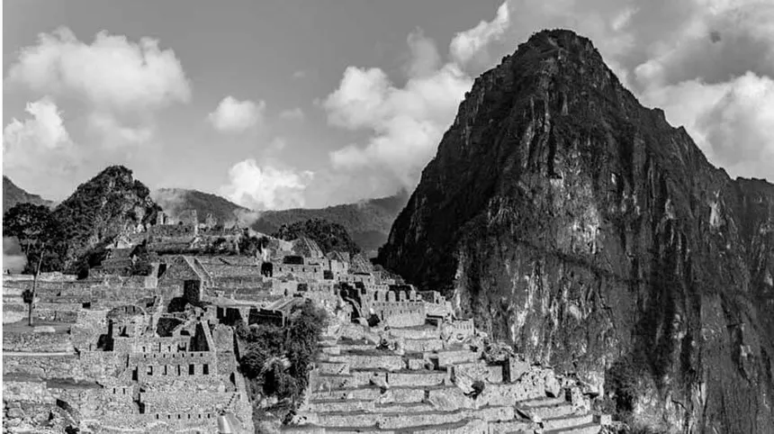
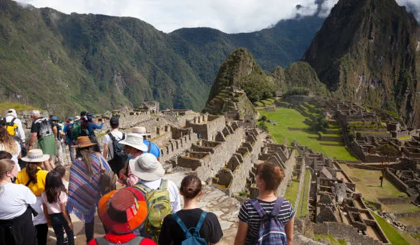

Machu Picchu
Publicado por Ignacio Bruno en Octubre de 2025

Machu Picchu, situada en lo alto de los Andes peruanos, fue una ciudad sagrada del Imperio Inca, construida alrededor del siglo XV por el emperador Pachacútec.
Abandonada durante la conquista española, fue redescubierta en 1911 por Hiram Bingham. Su arquitectura, perfectamente adaptada al entorno natural, demuestra los avanzados conocimientos de ingeniería y astronomía de los incas.
Historia
Machu Picchu fue construida durante el apogeo del Imperio Inca, probablemente como residencia real y centro religioso. Su ubicación estratégica, entre las montañas Machu Picchu y Huayna Picchu, le otorgaba un valor tanto espiritual como defensivo.
Aunque nunca fue descubierta por los conquistadores españoles, la ciudad cayó en el olvido hasta su redescubrimiento en 1911 por el explorador estadounidense Hiram Bingham, quien la dio a conocer al mundo como una de las mayores joyas arqueológicas de la humanidad.
Arquitectura
La ciudad se divide en dos zonas: la agrícola, formada por terrazas de cultivo, y la urbana, con templos, plazas y viviendas. Destacan el Templo del Sol, la Intihuatana (reloj solar) y el Templo de las Tres Ventanas, todos orientados de acuerdo con fenómenos astronómicos.
Los incas lograron un impresionante dominio de la piedra, uniendo enormes bloques sin el uso de mortero. Esta técnica permitió que las construcciones resistieran los frecuentes terremotos de la región.

Turismo
Hoy, Machu Picchu es uno de los destinos turísticos más importantes del mundo y fue declarada Patrimonio de la Humanidad por la UNESCO en 1983. También forma parte de las Nuevas Siete Maravillas del Mundo Moderno.
Los visitantes pueden acceder desde Cusco a través del famoso Camino Inca o en tren hasta Aguas Calientes. Desde allí, se asciende hasta la ciudadela para disfrutar de vistas panorámicas únicas entre la niebla y las montañas andinas.
